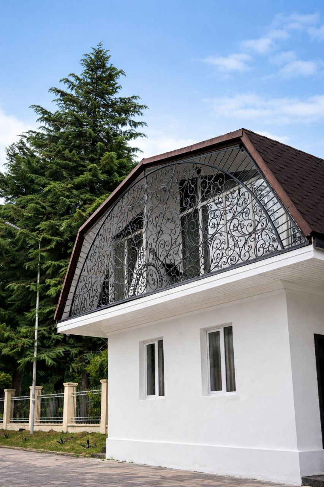
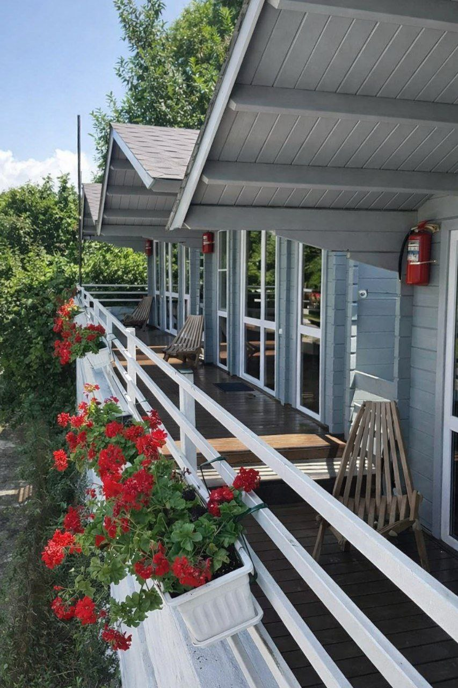
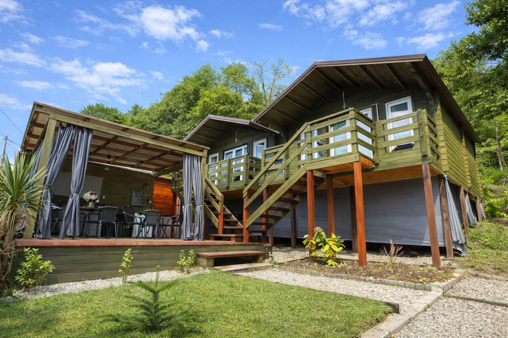
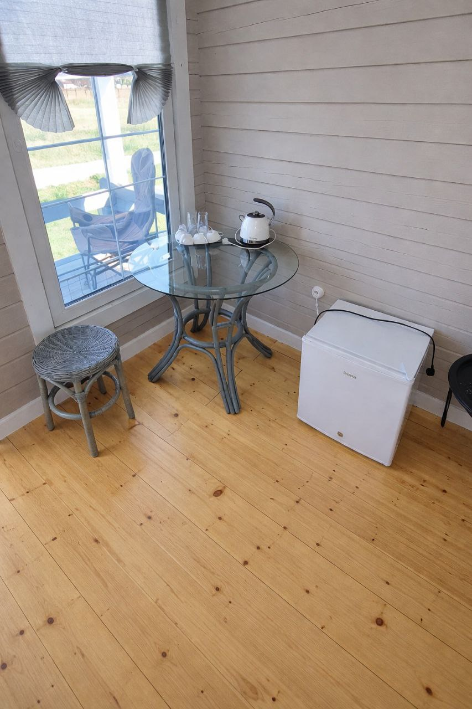

Песчаные пляжи в Сухуме (Мокко, Марнеро, Келасур)
1
"АМИНА" дом под ключ
🏖️ 5 мин до пляжа (песок/мелкая галька)
2

"БИ ХЭППИ" апарт-отель
🏖️ 3 мин до пляжа (песок)
3

"В СИНОПЕ" домики
🏖️ 5 мин до пляжа (песок/мелкая галька)
4

"ГРИН ХАУС" домики
🏖️6 мин до пляжа (песчаный)
5
"ДЕМИ МОККО" - два уютных домика
🏖️ 4 мин до пляжа (песчано-галечный)
6
"ЛНД" гостевой дом в Синопе
🏖️ 3 мин до пляжа (песок)
7

"МЗИЯ" мини-отель
🏖️ 5 мин до пляжа (песок)
8
"МОККО" апартаменты
🏖️ 2 мин до пляжа (песок/мелкая галька)
9
"МОККО БРИЗ" два домика
🏖️ 4 мин до пляжа (песчано-галечный)
10
"СИНОП ХАУС" коттеджи
🏖️ 5 мин до пляжа (песок)
11
"У МОРЯ" домики
🏖️ 2 мин до пляжа (песчаный)
12
"АКИРТАВА" квартира 3-к
🏖️ 8 мин до пляжа (песок/мелкая галька)
13
"ЛЕТНЯЯ" квартира 3к
🏖️ 6 мин до пляжа (песок)
14
"МОНРО" квартира 2-к
🏖️ 2 мин до пляжа (песчано-галечный)
15
"РИММА" две квартиры 1-к с кухней
🏖️ 5 мин до пляжа (песок)